Code
df1 <- df[c(2, 3), c("State/UT", "Area", "tobacco users ", "tobacco smokers ", "cigarette users ", "bidi users ", "smokeless tobacco users ", "Ever e-cigarette use ")]The necessary packages that will be used throughout data cleaning and analyzing are imported, such as ggplot2, tidyverse, d3r, GGally etc. The data is then imported from the Github repository created.
In order to reduce dimensionality, and improve model performance, certain features that provided redundant and irrelevant information were dropped, such as :
Ever users (Features 3, 5, 7, 9, 11, and 13) - The columns containing percent of ever tobacco, cigarette, and bidi users are dropped as we are focusing our research on the current users of these products in each state.
Feature 26 ( ‘Exposure to tobacco smoke at home/public place (%)’) is dropped as we already have ‘Exposure to tobacco smoke at home(%)’ and ‘Exposure to tobacco smoke inside any enclosed public places (%)’, so it is not providing any new information
Feature 36 and 37 ( ‘Current cigarette smokers who bought cigarettes from a store, paan shop, street vendor, or vending machine(%)’) and ( ‘Current bidi smokers who bought bidi from a store, paan shop, or street vendor (%)’) are dropped as well as it provides repetitive information.
Feature 41 and 42 ( ‘Bought Cigarette as individual sticks in past 30 days(%)’) and ( ‘Bought Bidi as individual sticks in past 30 days (%)’) are dropped as they do not provide any meaningful insights.
Feature 44 ( ‘Students who noticed anti-tobacco messages anywhere in past 30 days’) is dropped as it was a cumulative column with repetitive information.
The missing data values are imputed with the mean (average) value of the respective feature. While it’s not the best method to replace Null values as it assumes that they are missing at random and that imputing the mean will not introduce bias, we chose this method because we only had three missing values in the entire data frame, out of more than 6000. This made the chances of bias being introduced extremely low.
Since our data primarily consisted of numeric values, we needed to encode the few non-numeric values for proper visualization and analysis. In certain features that depict the median age of initiation of specific tobacco products, there was an entry of ‘<7,’ indicating that the use of these products started even before the age of 7. We replaced this value with the numeric value ‘7,’ which served as the upper bound for the age.
The column names in the actual data frame available on the Government of India’s website were lengthy and contained a significant number of special characters and uneven spacing. These names were modified to achieve uniformity, making it easier to analyze the data with fewer errors.
df1 <- df[c(2, 3), c("State/UT", "Area", "tobacco users ", "tobacco smokers ", "cigarette users ", "bidi users ", "smokeless tobacco users ", "Ever e-cigarette use ")]df1 = df1[,!(names(df1) %in% "tobacco users ")]
# Reshape the data for ggplot
data_long <- reshape2::melt(df1, id.vars = c("State/UT", "Area"))
ggplot(data_long, aes(x = Area, y = value, fill = variable)) +
geom_bar(stat = "identity", position = "stack") +
labs(x = "Area", y = "Percentage (%)", title = "Tobacco Use in Urban vs Rural Areas Across India") +
scale_fill_viridis_d() +
theme_minimal() +
theme(legend.position = "right")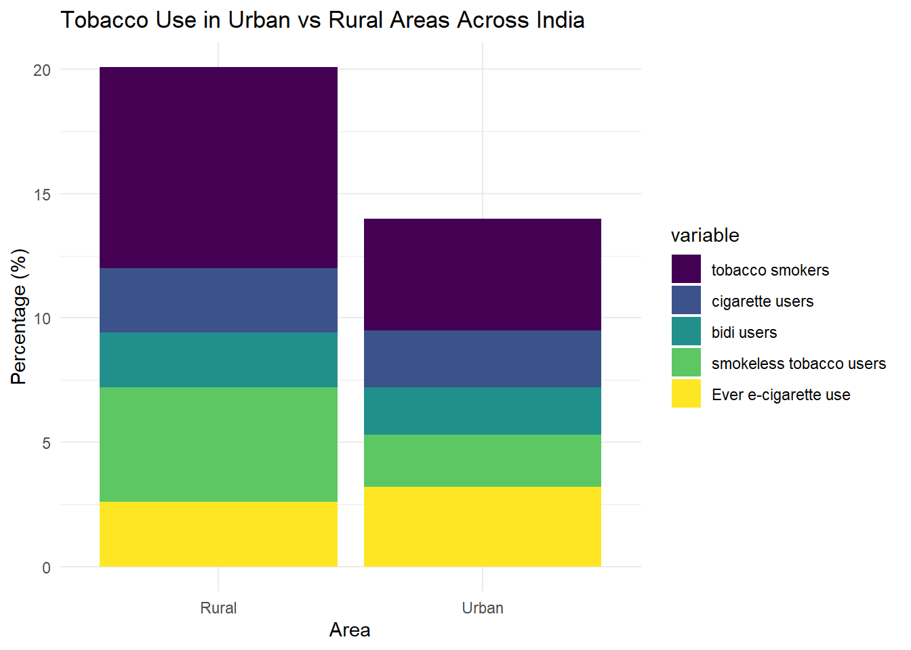
The chart breaks down tobacco use into several categories: tobacco smokers, cigarette users, bidi users, smokeless tobacco users, and ever e-cigarette users and directly compares the two areas (rural and urban) by stacking the different types of tobacco use.
In both rural and urban areas, the most significant proportion of tobacco use is attributed to ‘tobacco smokers’. This is followed by ‘smokeless tobacco users’ (Chewing tobacco such as loose leaf, plug, or twigs) in rural areas and e-cigarette users (E-cigs, vapes, and mods) in urban areas.
‘bidi users’ seem to make up a larger proportion in rural areas compared to urban areas as people have access to a wider variety of tobacco products and ‘bidi’ might not be a preferred option in comparison to the electronic cigarettes, and vapes available in cities.
ggplot(df, aes(x = `Median age of initiation of Cigarette `)) +
geom_histogram(fill = "cornflowerblue", color = "purple") +
labs(x = "Age", y = "Frequency",
title = "Age of Initiation of Cigarette Smoke in various States/UT of India") +
theme_minimal()`stat_bin()` using `bins = 30`. Pick better value with `binwidth`.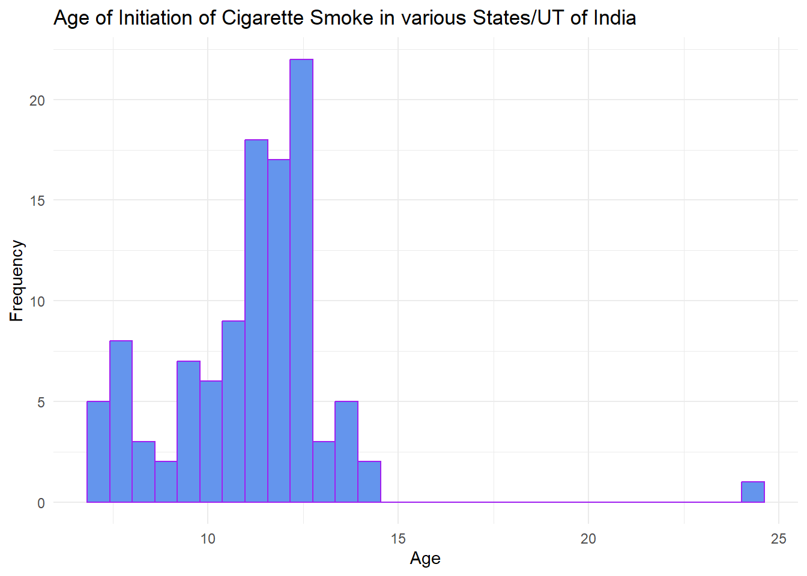
The histogram shows that the age of initiation of cigarette smoking has a clear peak around ages 13 to 14, with a significant number of initiations occurring between ages 12 and 16. This suggests that many individuals begin smoking cigarettes in their early teenage years. There is an outlier in this data, which signifies that there is a state (Manipur) where people start smoking at a very late age.
ggplot(df, aes(x = `Median age of initiation of Bidi `)) +
geom_histogram(fill = "cornflowerblue", color = "purple") +
labs(x = "Age of Initiation", y = "Frequency",
title = "Age of Initiation of Bidi in various States/UT of India") +
theme_minimal()`stat_bin()` using `bins = 30`. Pick better value with `binwidth`.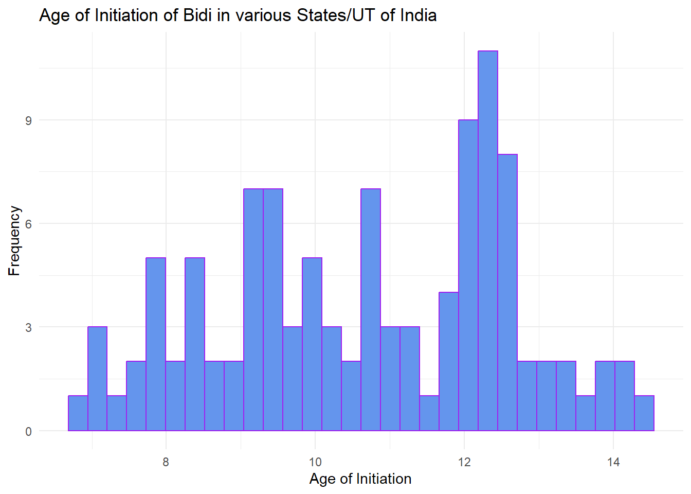
The age of initiation for bidi smoking is also concentrated in the early teenage years, with a notable peak around age 11. However, the distribution is slightly more spread out than that for cigarette smoking, with a range from about 8 to 14 years of age. This might reflect cultural or socioeconomic factors that make bidi smoking accessible or acceptable at a younger age in some areas.
ggplot(df, aes(x = `Median age of initiation of smokeless tobacco `)) +
geom_histogram(fill = "cornflowerblue", color = "purple") +
labs(x = "Age", y = "Frequency",
title = "Age of Initiation of Smokeless Tobacco in various States/UT of India") +
theme_minimal()`stat_bin()` using `bins = 30`. Pick better value with `binwidth`.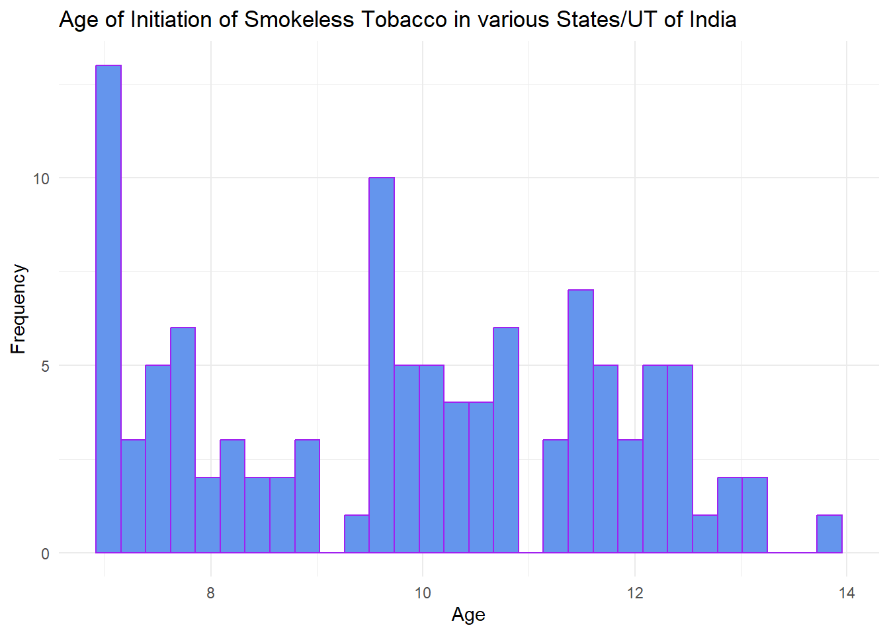
For smokeless tobacco, the initiation age starts as early as 6 or 7, with a more dispersed distribution. There is a notable peak at age 9, and other smaller peaks throughout the age range up to 14. This suggests a wider variation in the age at which individuals start using smokeless tobacco, which may be due to differing regional practices or less stringent control over the accessibility of smokeless tobacco products to minors.
When comparing the three histograms, it seems that the initiation of smokeless tobacco starts at a younger age compared to smoking cigarettes or bidi. This could be due to the perception that smokeless tobacco is less harmful, or it could be more easily accessible to younger individuals. The fact that tobacco initiation is occurring in early adolescence (or even childhood) is concerning from a public health perspective. It indicates the need for effective tobacco control measures and education about the risks of tobacco use targeted at children and young teens.
df2 <- df[, c("State/UT", "Area", "Cigarette: Store ", "Cigarette: Paan shop ", "Bidi: Store ", "Bidi: Paan shop ", "Smokeless tobacco: Store ", "Smokeless tobacco: Paan shop " )]
df2 <- df2[df2$Area != "Total", ]df2_rural <- df2[df2$Area != "Urban", ]
df2_urban <- df2[df2$Area != "Rural", ]df2u <- df2_urban |> pivot_longer(cols=c("Cigarette: Store ", "Cigarette: Paan shop ", "Bidi: Store ", "Bidi: Paan shop ", "Smokeless tobacco: Store ", "Smokeless tobacco: Paan shop "),
names_to='Sources',
values_to='Percentage')
#df2udf2r <- df2_rural |> pivot_longer(cols=c("Cigarette: Store ", "Cigarette: Paan shop ", "Bidi: Store ", "Bidi: Paan shop ", "Smokeless tobacco: Store ", "Smokeless tobacco: Paan shop "),
names_to='Sources',
values_to='Percentage')
#df2rggplot(df2u, aes(x = "Sources", y = Percentage, fill = Sources)) +
geom_bar(stat = "identity", width = 1) +
coord_polar(theta = "y") +
ggtitle("Sources of Tobacco Products: Urban India") +
theme_void()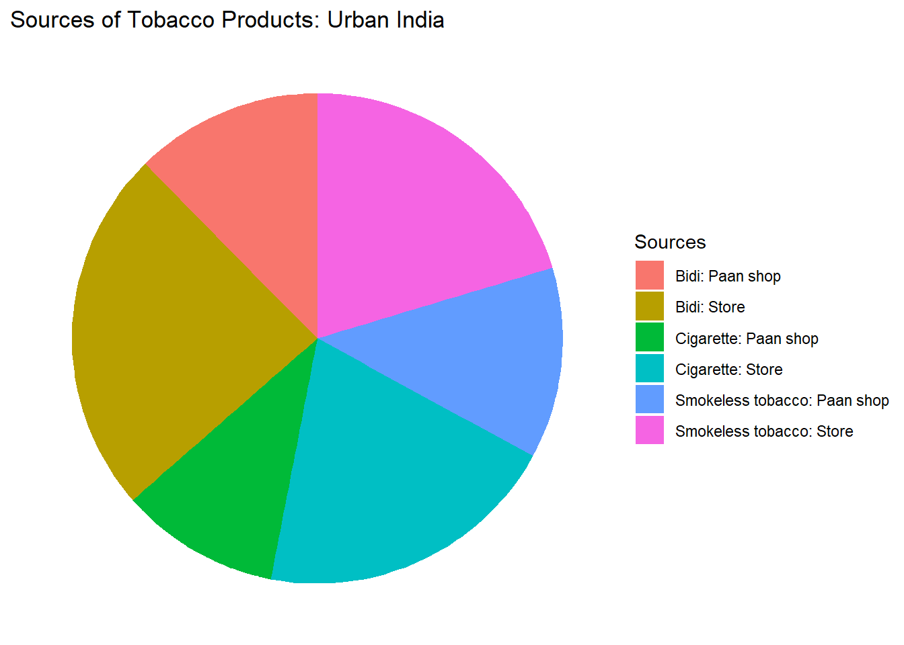
ggplot(df2r, aes(x = "Sources", y = Percentage, fill = Sources)) +
geom_bar(stat = "identity", width = 1) +
coord_polar(theta = "y") +
ggtitle("Sources of Tobacco Products: Rural India") +
theme_void()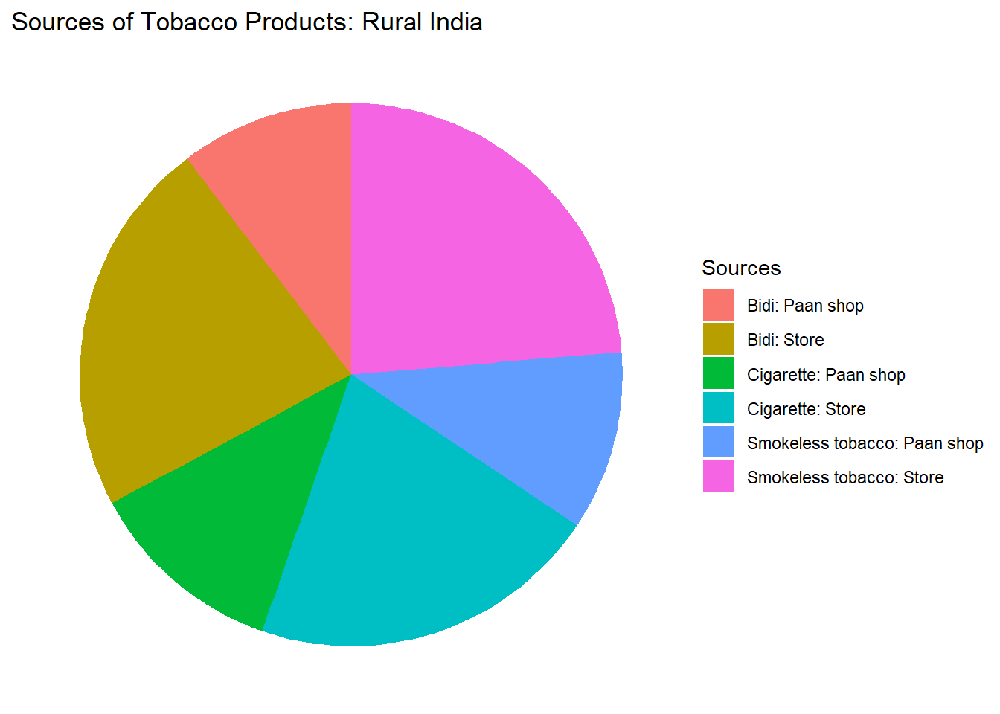
Paan shops play a significant role as a source of tobacco products in both urban and rural India, as indicated by the substantial segments representing tobacco products obtained from paan shops.
Bidi and smokeless tobacco are frequently purchased from paan shops in both urban and rural settings, underscoring their cultural association with these outlets. The ready availability of paan shops in every neighborhood across India implies that they are easily accessible even to children, which could contribute to the low median age of initiation for these two products.
The segments representing cigarettes from stores and paan shops are roughly equal in size in both urban and rural charts, suggesting a balanced distribution of cigarette sources.
Overall, the pie charts for urban and rural distribution demonstrate minimal variation in the sources for tobacco products. While paan shops serve as a common local source for bidi and smokeless tobacco, the source for cigarettes can be relatively interchangeable between stores and paan shops.
#df$Awareness <- EDAV_impute$`Awareness about e-cigarette (%)`
ggplot(df, aes(x = `State/UT`, y = `Awareness about e-cigarette `, fill = Area)) +
geom_col() +
labs(x = "State/UT", y = "Awareness (%)", title = "Awareness about E-cigarette in Indian States/UTs Faceted by Area") +
theme(axis.text.x = element_text(angle = 90, hjust = 1)) +
facet_wrap(~ Area, ncol = 3) +
scale_fill_brewer(palette = "Set1")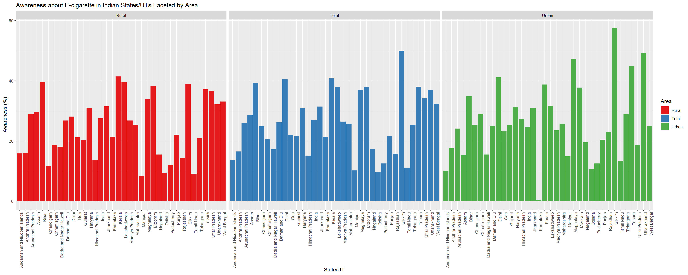
There is a clear pattern that in most states and UTs, the awareness levels are higher in urban areas compared to rural areas which can be attributed to better access to information, and a strong influence of western culture and products, specially on impressionable minds that are studied in this survey.
Some states/UTs show high awareness levels in both rural and urban areas, while others show a stark contrast between the two. This may indicate the spread of information, trends and cultures between the urban and rural areas of the state which can depict the information divide between the two.
Certain regions, such as Sikkim, Uttarakhand and Tripura stand out with particularly high levels of awareness about e-cigarettes. Further geographical analysis shows that this could be a trend in the mountainous regions of the country, where youth may be more inclined towards electronic cigarettes due to difficulties in using fire for lighting at high altitudes.
Impossibility - The extremely low level of awareness about E-cigarette use in Karnataka, specially when the rural awareness is at par with others, and the neighbouring states have a significant awareness as well seems to be an incorrect data point.
#General plot - to make it without total:
df_filtered <- df[df$Area != "Total", ]
ggplot(df_filtered, aes(x = Area, y = `Awareness about e-cigarette `, fill = Area)) +
geom_bar(stat = "identity") +
labs(
title = "Awareness about E-cigarette in Indian States/UTs faceted by Area",
x = "Area",
y = "Awareness about e-cigarette (%)",
fill = NULL
) +
facet_wrap(~ Area, scales = "free_x") +
theme(axis.text.x = element_text(angle = 90, hjust = 1))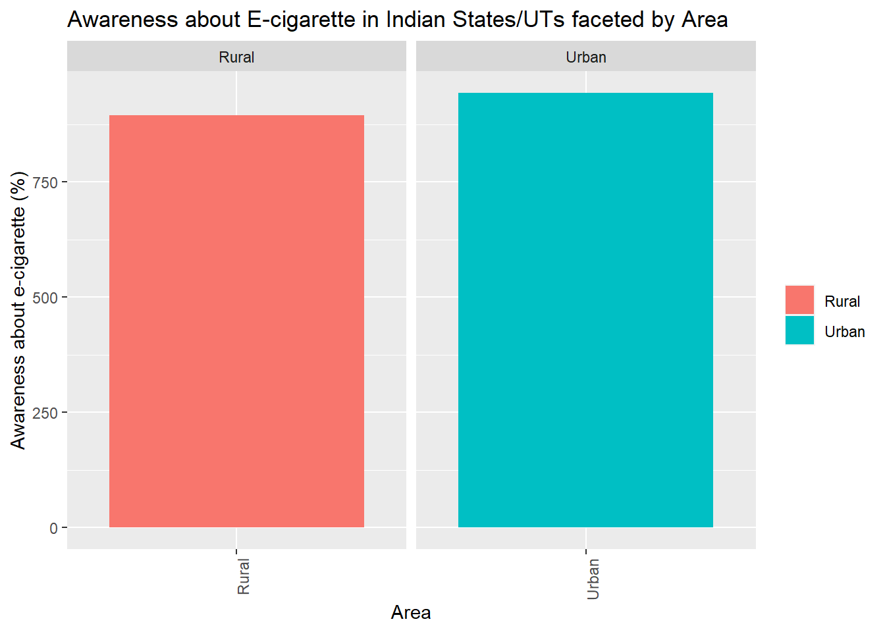
The graph simply shows a higher number of people being aware of E-cigarette use in Urban areas as compared to rural, which agrees with our previous graph that e-cigarettes are consumed more in those regions as compared to the rural ones.
# Scatterplot 1
sp1 <- ggplot(df, aes(x = `Exposure to tobacco smoke at home `, y = `tobacco users `)) +
geom_point() +
labs(
title = "Exposure at Home vs. Current Tobacco Users",
x = "Exposure to tobacco smoke at home (%)",
y = "Current tobacco users (%)"
)
# Scatterplot 2
sp2 <- ggplot(df, aes(x = `Exposure to tobacco smoke inside any enclosed public places `, y = `tobacco users `)) +
geom_point() +
labs(
title = "Exposure in Enclosed Public Spaces vs. Current Tobacco Users",
x = "Exposure to tobacco smoke in enclosed public spaces (%)",
y = "Current tobacco users (%)"
)
# Scatterplot 3
sp3 <- ggplot(df, aes(x = `Exposure to tobacco smoke at any outdoor public places `, y = `tobacco users `)) +
geom_point() +
labs(
title = "Exposure at Outdoor Public Places vs. Current Tobacco Users",
x = "Exposure to tobacco smoke at outdoor public places",
y = "Current tobacco users (%)"
)
# Scatterplot 4
sp4 <- ggplot(df, aes(x = `Exposure to tobacco smoke at School`, y = `tobacco users `)) +
geom_point() +
labs(
title = "Exposure at School vs. Current Tobacco Users",
x = "Exposure to tobacco smoke at school",
y = "Current tobacco users (%)"
)
grid.arrange(sp1, sp2, sp3, sp4, ncol = 2)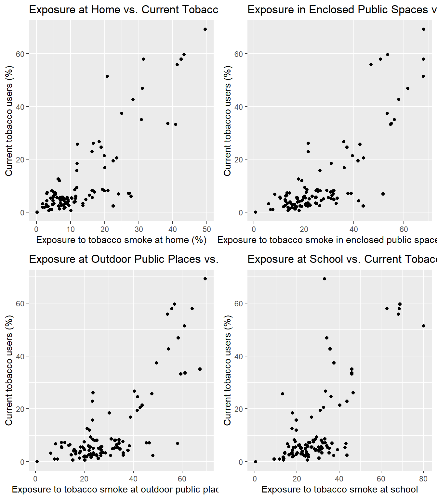
Across all environments, there seems to be a general trend that higher exposure to tobacco smoke is associated with higher percentages of current tobacco users, since the scatterplots show a positive correlation in all 4 cases. This may reflect both the influence of being around smokers and the contribution of current smokers to the secondhand smoke in these environments.
Exposure at Home: There appears to be a positive correlation between exposure to tobacco smoke at home and the percentage of current tobacco users. This suggests that households with smokers are less likely to restrict smoking, resulting in higher secondhand smoke exposure.
Exposure in Enclosed Public Spaces: The scatter plot shows a wide dispersion of points, suggesting a variable relationship between exposure to tobacco smoke in enclosed public spaces and the percentage of current tobacco users. While there’s a trend of more current tobacco users with increased exposure, the relationship doesn’t appear to be as strong as with home exposure, indicating that other factors may influence tobacco use in these settings.
Exposure at Outdoor Public Places: There is a noticeable positive trend, where higher exposure to tobacco smoke at outdoor public places corresponds to a higher percentage of current tobacco users. This could imply that where smoking is more prevalent in public areas, there is also a higher likelihood of encountering current smokers.
Exposure at School: This scatter plot also indicates a positive trend, although the data points are more scattered. Higher exposure rates at schools correlate with higher percentages of current tobacco users among the observed populations. This might reflect the influence of peer presence and social environments on tobacco use among school-goers.
selected_columns <- df_filtered[, c("tobacco users ", "Students who were taught in class about harmful effects of tobacco use during past 12 months ", "School heads aware of COTPA, 2003 ", "Schools authorized by the state government to collect fine for violation under Section-6 of the COTPA, 2003 ", "Schools followed ‘tobacco-free school’ guidelines ", "Schools aware of the policy for displaying ‘tobacco-free school’ board ")]
cor_matrix <- round(cor(selected_columns),2)
melted_cormat <- melt(cor_matrix)
#head(melted_cormat)
ggplot(data = melted_cormat, aes(x = Var1, y = Var2,fill=value)) +
geom_tile() +
geom_text(aes(Var2, Var1, label = value), color = "white", size = 5) +
theme(axis.text.x = element_text(angle = 90, size= 5))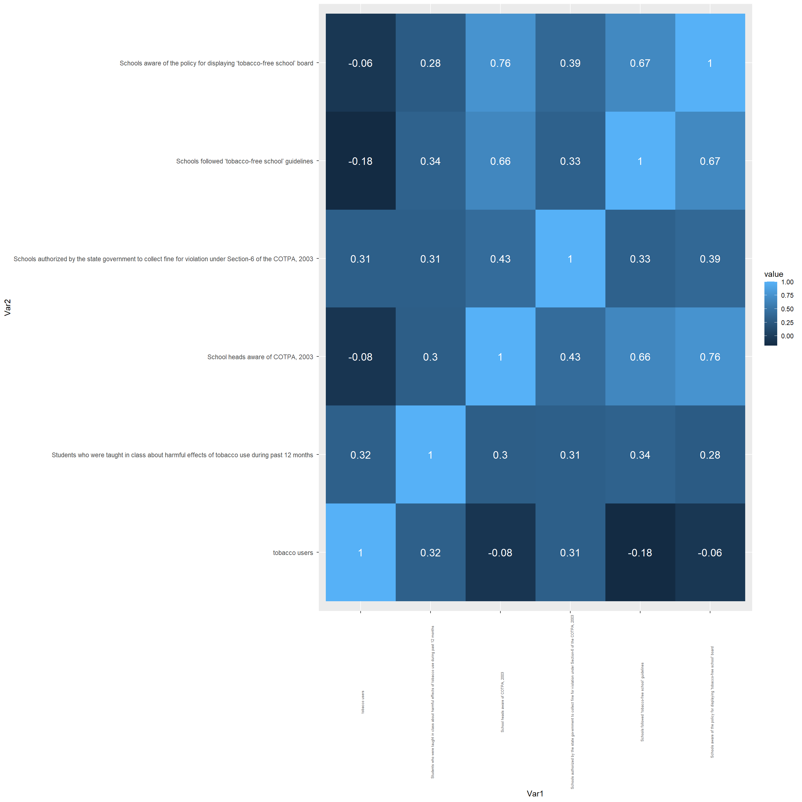
There seems to be a strong positive correlation (0.76) between schools being aware of the tobacco-free school policy and following the tobacco-free school guidelines, which suggests that awareness is likely to lead to implementation.
The correlation between schools authorized to collect fines under COTPA and school heads’ awareness of COTPA is positive (0.43), indicating that when school heads are aware of the laws, schools are more likely to be involved in enforcement.
There is a positive correlation (0.32) between the percentage of tobacco users and students being taught about the harmful effects of tobacco use. The correlation is not that high which might suggest that a more comprehensive education is needed to effectively lower usage rates, as the current one might just be making them aware of the products but not actually making them realize the need to quit/ not start.
Some variables show very low correlation with each other, like the awareness of the policy for displaying a ‘tobacco-free school’ board and the percentage of tobacco users (-0.06), which implies that simply being aware of the policy does not necessarily translate to a reduction in tobacco usage among students.
ggplot(df, aes(x = `Students who saw tobacco advertisements anywhere in past 30 days `, y = `tobacco users `, color = Area)) +
geom_point() +
labs(
title = "Tobacco Advertisments vs. Tobacco Users",
x = "Students who saw tobacco advertisements anywhere in past 30 days",
y = "Current tobacco users (%)"
)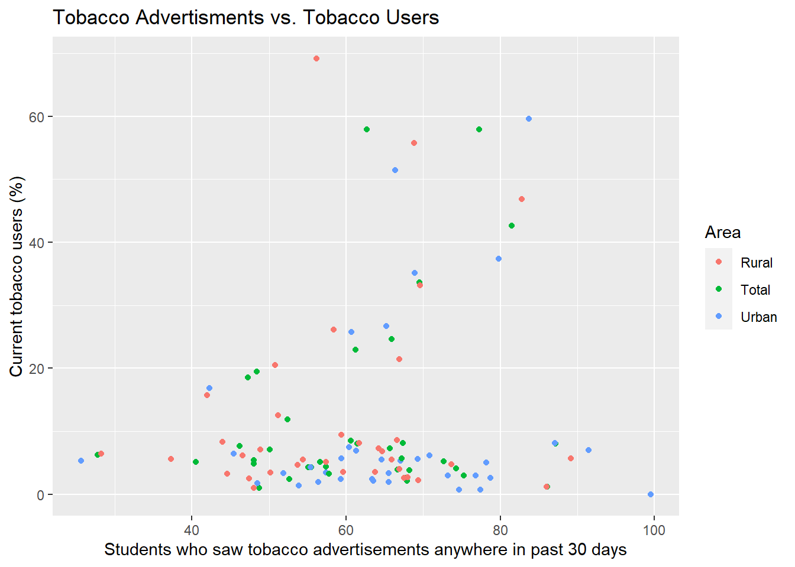
There does not seem to be a clear, strong correlation between the exposure to tobacco advertisements and the percentage of current tobacco users. The points are spread across the plot without a distinct pattern indicating a strong linear relationship.
However, it appears that in some cases, urban areas (blue dots) may have a higher percentage of students who have seen tobacco advertisements compared to rural areas (red dots), which could be due to a higher density of advertising platforms and a greater reach in urban areas but this does not uniformly translate to a higher percentage of current tobacco users. The total percentages (green dots) are interspersed among the rural and urban ones, suggesting that the overall pattern is influenced by both rural and urban data and does not favor one over the other significantly.
df3 <- df[, c("State/UT","Area", "Advertisments: Mass Media", "tobacco users ","Advertisments: Promotions")]
df3_a <- df3[df3$Area != "Total", ]ggparcoord(df3_a, alphaLines = 0.8, columns = 3:5, groupColumn = "Area") +
labs(title = "Impact of Pro Tobacco Advertisements on Users",
x = "", y = "", title.size = 40) +
theme(axis.text.x = element_text(angle = 90, hjust = 1))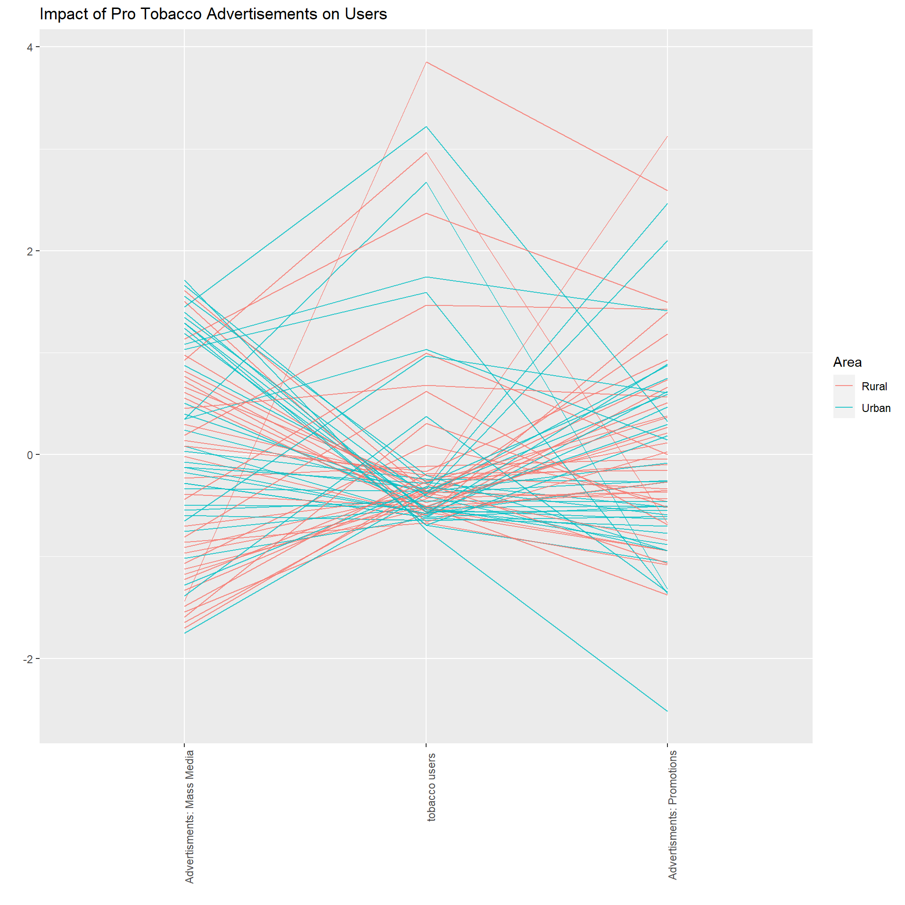
Although most of the data trends towards the lower end of the tobacco users axis, careful consideration reveals that higher values on advertisements in mass media imply a greater number of tobacco users. A similar trend is observed in the relationship between promotions and users, indicating a general positive correlation between the two and tobacco use. However, the correlation is not particularly strong, and numerous outliers exist. These outliers may suggest that the data may not precisely reflect reality, potentially containing collection errors, or that advertisements can sometimes evoke repulsion and reduce motivation to purchase tobacco products.
The urban lines (in blue) are higher on the advertisement axes, reflecting a higher saturation of tobacco advertisements in urban areas.
The lines that appear high on the ‘Tobacco Users’ axis but low on both advertisement axes might represent areas where tobacco use is prevalent despite low advertisement exposure. This suggests that factors other than advertisements influence tobacco use in these regions, such as peer pressure, household exposure, weather conditions, cultural norms, and societal influences.
df4 <- df[, c("State/UT","Area","Anti Tobacco messages: Mass media","tobacco users ", "Anti Tobacco messages: Community events", "Anti Tobacco messages: Health Warnings")]
df4_a <- df4[df4$Area != "Total", ]ggparcoord(df4_a, alphaLines = 0.8, columns = 3:6, groupColumn = "Area") +
labs(title = "Impact of Anti Tobacco Advertisements on Users",
x = "", y = "", title.size = 40) +
theme(axis.text.x = element_text(angle = 90, hjust = 1))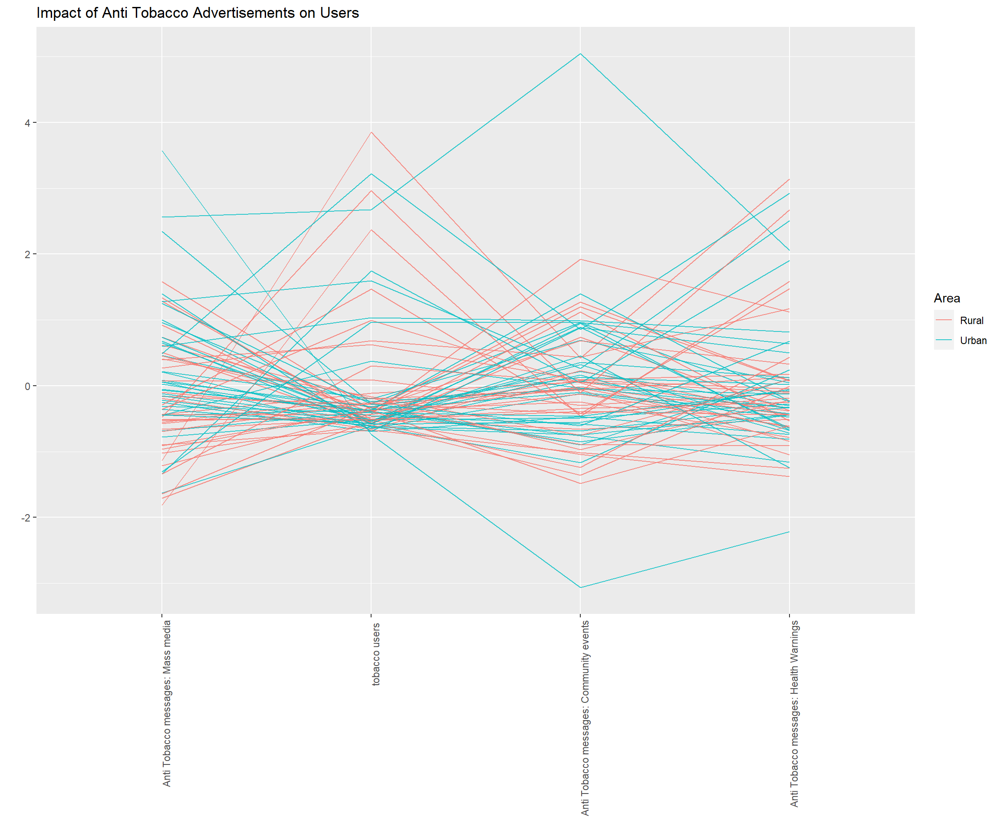
The plot reveals complex relationships, with no clear, single pattern emerging. This suggests that the relationship between anti-tobacco efforts and tobacco usage is multifaceted and may be influenced by additional uncharted factors.
In rural areas (indicated by the red lines), most data points in the lower region of the ‘Anti-Tobacco Messages in Mass Media’ axis are associated with high values of tobacco users, indicating a negative correlation. This negative correlation suggests that anti-tobacco advertisements and warnings are effective in reducing tobacco product use.
Overall, the dominance of blue lines over red lines in the graph indicates that anti-tobacco campaigns are more prevalent, and there is greater effort to curb tobacco use in urban areas compared to rural areas.
There are noteworthy observations in this dataset, such as the case where ‘Anti-Tobacco Messages in Community Events’ is extremely low (indicated by the urban area’s blue line), but tobacco use in this region is also very low. This suggests that tobacco use is so minimal that extensive anti-tobacco programs may not be necessary.